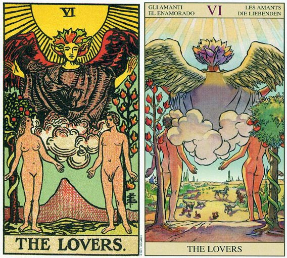

塔罗牌恋人（The lovers）解释
相关语：结合 对应星象：双子座
恋人牌意味，为了爱的关系而做的某些决定。
阳光普照，有个天使出现在一对男女的上方。他们两个人裸身站在两棵树之前。女人身后是一棵知识树，而男人背后则是生命树。恋人牌是有关选择的牌，为了找寻满足，男人往向女人，而女人则望向精神或内心。
恋人牌代表的是青春期。伴随着道德及知识的独立，有关性的事情就出现了。性趋力引导你远离独处的状态，而朝向和别人形成关系，以便走向爱的道路。在爱当中你可能会放弃自我控制的需要，以至你无法从别人身边或生活本身孤立出来。
天使代表在一个较高的层次上，他们曾经是而且也仍然是什么，但那必须两个人结合在一个才看得见。如果你想更接近天使，或真实的自我，则应将理性（男性）及热情（女性）加以调和。
恋人牌可能代表你生命当中一段重要的两性关系，也可能是在暗示随着一段两性关系的决定，你从伴侣那边得到实质的协助或情感上的支持。
恋人是一张代表双子座的牌，尤其是如果牌面上同时出现了宝剑骑士。而如果是出现其他宝剑的宫廷牌的话，双子座的象征程度就稍微轻了。双子座的课题之一是学习如何座决定。对于双子座的人而言，在两个或两个以上的选择项目中做出决定，可能是有困难的，因为对大多数具有多重性格的双子座而言，每一种选择似乎都显得很有吸引力。
处于青春期的年轻男子正在学习，将一部分他对妈妈的爱转移到恋人身上，而年轻女孩则是在学习转移部分对爸爸的爱到伴侣身上。这可不是件轻松的任务，因为这小伙子的妈妈可能会对他宽恕、宽容及富于耐心，而伴侣可不见得会这样做。而小姑娘的父亲会对他那处于青春期的女儿采取理性、成熟、耐性、爱心和容忍的态度，而她的新伴侣同样不见得如此。但是不管怎么说，这对恋人所发展出的新关系提供了许多新的机会，譬如性关系、平等的关系，以及共同成长与发展的机会。因此你必须在亲子关系的安全性，与新关系的成长机会中做出选择。
男人背后的生命属于女人身后的知识树，代表的是伊甸园。当男人可能因为在物质世界当中，为了一些实质的事物而忙得乐此不疲时，女人便会提醒他，他还负有心灵上的目标，而且生存还有更高的意义。也就是因为这样，她才会仰头望着天使。
或许当伊甸园的亚当咬了一口苹果时，他就想起了他的旅程、心灵目标，以及摆在眼前的工作。这有可能会变成一种失望或幻灭，而且在他为自己的心灵之路负起责任之前，他还可能先责备夏娃一顿，因为她提醒了他，让他不得不上路。或许这是一个“打死信差”的案例。夏娃因为指出了既存的事实而得到一个坏名声。
恋人（The lovers）牌面解读
恋人 THE LOVERS 代表热恋。一段新关系的形成。也可是成为决定一段关系应否转变成突破。逆位的代表逃避责任与承诺，空想又或是一段关系的结束。
这是塔罗牌中解释爱情最好的一张牌，他代表这人生的青春期。牌面中一对男女在天使的召唤下走到一起，成为恋人。尽管阳光普照，充满了幸福的感受，但恋人的后面却有着很多考验在等着他们——希望之树和毒蛇盘踞的禁果之树。 恋爱中的情侣可以彼此协助、支持，浪漫成了这段美好时光的主题。但恋爱中的人必须面对感情上的抉择，就是在众多的异性中选择其中的一个作为伴侣，所以说爱情是既美丽又残酷的。在解牌时一定要注意“结合”背后的“选择”，也就是要有所取舍。
恋人（The lovers）正位释义
敏感、前途光明、有志同道合的朋友、与人合作、对未来的抉择、决定未来命运的时机、浪漫的爱情、有爱情出现的预感
撮合，爱情，流行，兴趣，充满希望的未来，魅力，增加朋友。
感情和肉体对爱的渴望，它暗示恋情将向彼此关系更亲密的方向发展。而在事业上将面临重大的抉择，它将关系到你的未来前途。
恋人（The lovers）逆位释义
禁不起诱惑，纵欲过度，反覆无常，友情变淡，厌倦，争吵，华丽的打扮，优柔寡断。
幼稚、退休、孤独、有阻力、眼花缭乱、血气方刚、对结果失望、充满戒心、逃避爱情、恋情短暂、分手、多情
青春年少的你们还没有准备好迎接现实生活，感情上表现幼稚。你对成长虽有期待与希望，却希望永远待在父母的保护层里面躲避危险，逃避责任。在事业方面，你总保持着很高的戒心，让对方感到很不舒服，不愿同你合作。
大体上的意义
恋人是一张代表决定的牌，而且除非顾客问的是某个特定的问题，否则它通常是指有关两性关系的决定。它可能是在描述沉浸在爱恋之中的过程，因为它可以意指一段两性关系中的最初，或者是罗曼蒂克的阶级。
恋人牌也可以形容在决定到底要保留就有的关系，或转进新关系当中。它暗示你已经由过去经验而得到成长了，因此你可以安全的迈向一个新的阶段。
倒立的恋人
当恋人牌倒立时，代表任何迈向关系的新状态，或新阶段的希望，都是建立在期待的梦想之上。你还没有成功的完成你目前的状态，因此你还是继续带在旧关系当中比较好。
这杖牌也可能是在暗示一段关系的结束，或是一种具毁灭性的爱的关系。浪漫的或性的问题可能会支配你的生活。或许你没有能力超越关系的最初或浪漫的阶段，而且你有可能努力向确保目前的关系，可以一直保留在这个最初的阶段。所以这里也暗示逃避更深刻的承诺或责任。
两性关系上的意义
恋人牌暗示一段新关系，或既有关系的新阶段。这张牌也可以代表决定去爱，或展开新关系，好让这段新关系或新阶段可以安全的开始。它又可以形容沉醉于爱河，或处于一段关系中的罗曼蒂克。